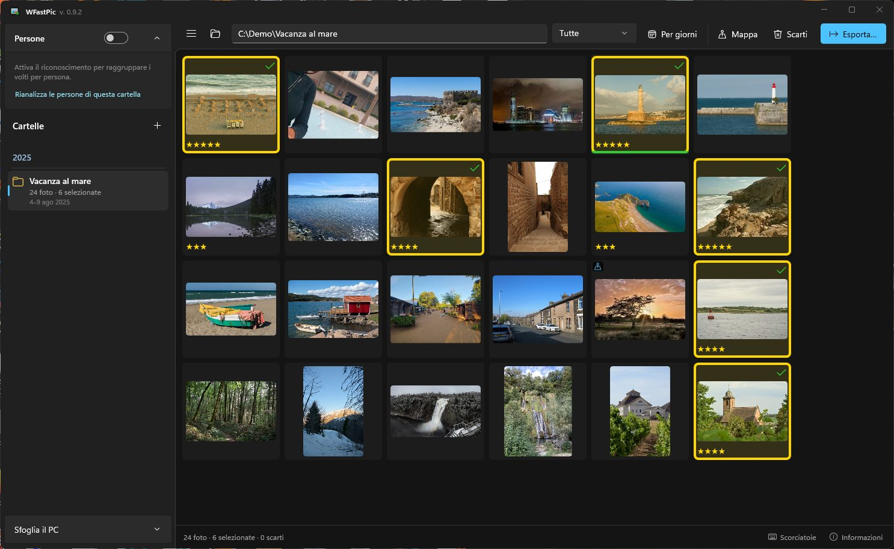
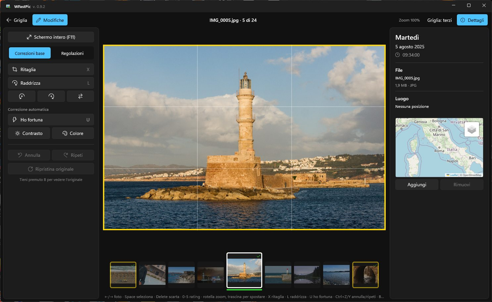

WFastPic
Un tributo open source a Picasa, per Windows: scegliere e sistemare in fretta centinaia di foto.
Apri la cartella della vacanza, premi Spazio per tenere le foto buone e Canc per scartare le altre, dai una sistemata veloce ed esporti. Pensato per le grandi raccolte di foto HEIC di iPhone, droni e fotocamere: tutto da tastiera, senza mai aspettare.
Versione 1.0.0 · Windows 10 e 11 · gratuito e open source (MIT) · non servono permessi di amministratore · tutti i download


Foto di esempio con licenza CC0 da Wikimedia Commons.
Perché esiste
Google ha smesso di sviluppare Picasa nel 2016, e Picasa non legge le foto HEIC dei telefoni di oggi.
Di Picasa mi mancava una cosa sopra tutte: poter passare in rassegna tutte le foto di una vacanza, scegliere al volo quelle buone, sistemarle con un clic e poi estrarle. Nessun altro programma lo fa in modo così comodo e veloce. WFastPic è il mio modo di riavere quel programma, sul Windows di oggi e con le foto di oggi. — Walter, autore di WFastPic
Non è un Lightroom e non è un gestore di file: è lo strumento per passare da 1300 scatti alle 80 foto da tenere, nel minor numero di gesti possibile.
Cosa fa
Scegliere
- Griglia veloce anche con migliaia di foto, in ordine di scatto, divisibile per giorno.
- Spazio seleziona, Canc scarta, 0–5 stelle.
- Raffiche riconosciute da sole: Shift+Spazio tiene questa e scarta le altre.
- Voto automatico che segnala le foto mosse e scure, sempre separato dal tuo.
Sistemare
- Ritaglio con ritagli suggeriti che non tagliano i volti; raddrizza; gira e specchia.
- “Ho fortuna”, luce di riempimento, alte luci, ombre, temperatura.
- Mai distruttivo: il file originale non viene mai toccato.
Ritrovare
- Cartelle raggruppate per anno, come in Picasa.
- Mappa delle foto con i nomi dei luoghi, posizione correggibile a mano.
- Persone: riconoscimento dei volti sul tuo PC, nomi validi in tutte le cartelle.
- Live Photo e dati dei droni DJI riconosciuti.
Esportare
- JPEG alle dimensioni originali o ridimensionati, qualità a scelta.
- Filigrana e tag.
- Data di scatto e GPS conservati, o rimossi se preferisci.
Da Picasa a WFastPic
Se usavi Picasa, sai già come funziona.
| In Picasa | In WFastPic |
|---|---|
| Cartelle raggruppate per anno | Pannello cartelle per anno, con numero di foto e periodo |
| Stelle e foto “tenute” | Spazio seleziona, 0–5 stelle, Canc scarta (mai cancellazione irreversibile) |
| “Ho fortuna” | U: contrasto e colore automatici in un colpo |
| Ritaglia e raddrizza | Ritaglio con proporzioni e ritagli suggeriti, raddrizzamento insieme al ritaglio |
| Persone (volti con nome) | Riconoscimento dei volti sul tuo PC, nomi validi in tutte le cartelle |
| Foto sulla mappa | Mappa delle foto e nomi dei luoghi |
| Esporta | JPEG ridimensionati, filigrana, tag, data e GPS conservati |
| — | Raffiche, foto HEIC, Live Photo, dati dei droni DJI |
Le tue foto restano tue
Originali intatti
- Selezioni, stelle e modifiche stanno in una cartella nascosta
.wfastpicaccanto alle foto.
Tutto sul tuo PC
- Nessun account, nessun cloud, nessuna telemetria. Il riconoscimento dei volti gira in locale.
Solo quello che scegli tu
- Mappe, nomi dei luoghi e controllo degli aggiornamenti si possono spegnere. Nota sulla privacy
Installare
- Scarica il setup
WFastPic-1.0.0-win-x64-setup.exedalla pagina delle release. Preferisci senza installazione? Prendi lo.zipportatile. - Avvialo. Non servono permessi di amministratore. Il programma non è ancora firmato digitalmente, quindi Windows può mostrare “Windows ha protetto il PC”: clic su “Ulteriori informazioni” → “Esegui comunque”. Code signing policy
- Apri una cartella di foto e comincia a premere Spazio.
Domande
WFastPic è gratuito?
Sì. È open source con licenza MIT: niente pubblicità, niente account, nessuna versione a pagamento.
Apre le foto HEIC dell'iPhone?
Sì, è fatto proprio per quelle. Windows ha bisogno delle estensioni HEIF e HEVC, che di solito ci sono già; se le foto non si aprono, si installano dal Microsoft Store.
Modifica le mie foto originali?
Mai. Le modifiche sono salvate come una ricetta accanto alle foto e applicate quando le guardi o le esporti. Gli scarti vanno nel Cestino (con conferma) o in una cartella a parte.
In che lingue e su quali sistemi?
Italiano e inglese. Windows 10 (1809 o successivo) e Windows 11.